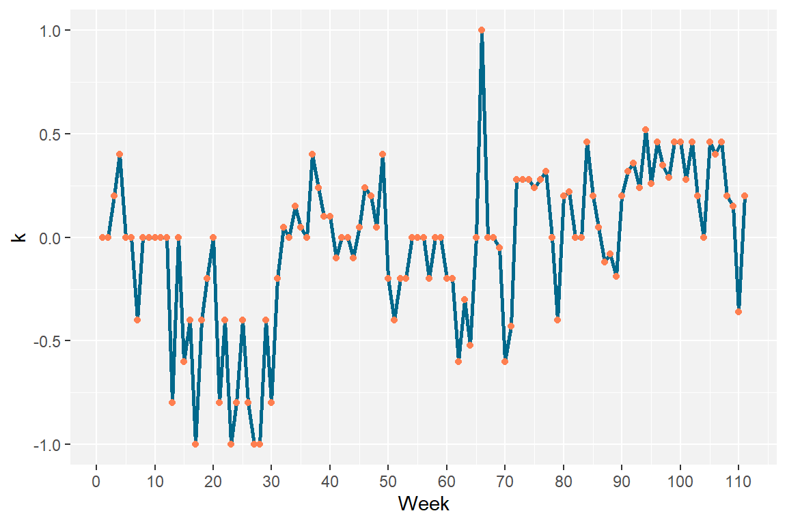

install.packages("stats")
install.packages("rio")
install.packages("ggplot2")Long Memory Process Detection in Idiographic Educational Data Using R
Keywords
long memory process, pink noise, person-specific methods, achievement goal, learning analytics
1 Introduction
3 Applications in R
3.1 Libraries used
Whittle’s MLE was originally coded using MATLAB language, see [6]. However, we can translate the MATLAB algorithm into R code using only the stats package, which is a basic package—automatically installed—on R. This package contains a set of useful functions for many statistical calculations. As in other chapters, we will use rio to import and load data into R. We will use the ggplot2 package to plot our data (i.e., an idiographic time series). You can install these three packages using the install.packages() function.
You can then load these packages with the library() function.
library(stats)
library(rio)
library(ggplot2)3.2 Data visualization
First, we load the data and then visualize it using ggplot2. Below, we use import() function from rio to read the data.
MotivationData <- import ("https://github.com/remialtamore/data_chapter/raw/main/Motivation.xlsx")
MotivationDataThe dataset comprises two columns of length 111: the first column is the number of weeks (“Week”) and the second column is the value of k for each week (“MotivK”). To facilitate data visualization, we use ggplot2 to create a line graph. The reader can refer to chapter 6 of the previous book [7] to understand how to use ggplot2.
ggplot(MotivationData, aes(x = Week, y = MotivK)) +
geom_line(colour = "deepskyblue4", linewidth = 1) +
geom_point(colour = "coral", size = 1.5) +
labs(x = "Week", y = "k") +
scale_x_continuous(breaks = seq(0, 110, by = 10)) +
scale_y_continuous(breaks = seq(-1, 1, by = 0.5)) +
theme(
panel.background = element_rect(fill = "gray95")
)

We can see from this plot that the motivational state of the student, whose goal is to defend his thesis, is characterized by varied, non-linear changes from one week to the next. There are significant periods of avoidance motivation (e.g., from week 12 to week 30) and periods of approach motivation (e.g., from week 93 to week 102), but motivation appears more globally unstable, oscillating regularly towards approach or avoidance from a k that frequently remains around 0.
References
1.
Gernigon C, Den Hartigh RJR, Vallacher RR, Geert PLC van (2023) How the Complexity of Psychological Processes Reframes the Issue of Reproducibility in Psychological Science. Perspectives on Psychological Science 17456916231187324. https://doi.org/10.1177/17456916231187324
2.
Gernigon C, Vallacher RR, Nowak A, Conroy DE (2015) Rethinking Approach and Avoidance in Achievement Contexts: The Perspective of Dynamical Systems. Review of General Psychology 19:443–457. https://doi.org/10.1037/gpr0000055
3.
Saqr M, Vogelsmeier LVDE, López-Pernas S (2024) Capturing where the learning process takes place: A person-specific and person-centered primer. Learning and Individual Differences 113:102492. https://doi.org/10.1016/j.lindif.2024.102492
4.
Peng CK, Havlin S, Stanley HE, Goldberger AL (1995) Quantification of scaling exponents and crossover phenomena in nonstationary heartbeat time series. Chaos (Woodbury, NY) 5:82–87. https://doi.org/10.1063/1.166141
5.
Geert P van, Ruiter N de (2022) Toward a Process Approach in Psychology: Stepping into Heraclitus’ River. Cambridge University Press, Cambridge
6.
Roume C (2023) A guide to whittle maximum likelihood estimator in MATLAB. Frontiers in Network Physiology 3: https://doi.org/10.3389/fnetp.2023.1204757
7.
López-Pernas S, Misiejuk K, Tikka S, Kopra J, Heinäniemi M, Saqr M (2024) Visualizing and Reporting Educational Data with R. In: Saqr M, López-Pernas S (eds). Springer Nature Switzerland, Cham, pp 151–194